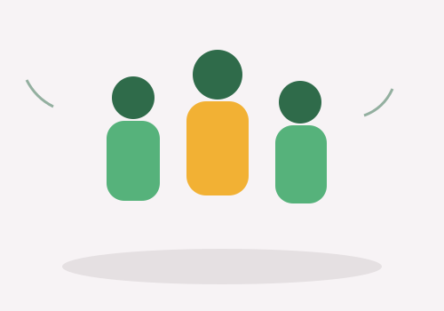

¿Quiénes Somos?
Somos un equipo de estudiantes que desarrolló el proyecto Bastón Inteligente como una iniciativa de tecnología asistiva, con el objetivo de mejorar la autonomía y seguridad de personas con discapacidad visual.
Nuestra misión
Diseñar soluciones tecnológicas accesibles y de bajo costo que ayuden a prevenir accidentes y mejoren la calidad de vida de las personas con discapacidad visual en su desplazamiento diario.
Nuestra visión
Que la tecnología asistiva sea accesible para cualquier persona que la necesite, combinando electrónica simple con diseño centrado en el usuario.
Cómo empezó el proyecto
Origen
Bastón Inteligente nació como un trabajo práctico enfocado en tecnología asistiva y desarrollo web.
Evolución
Con el tiempo sumamos el curso online, el blog de novedades y toda la
documentación técnica del dispositivo, integrando todo en este sitio.
El proyecto sigue en desarrollo constante.